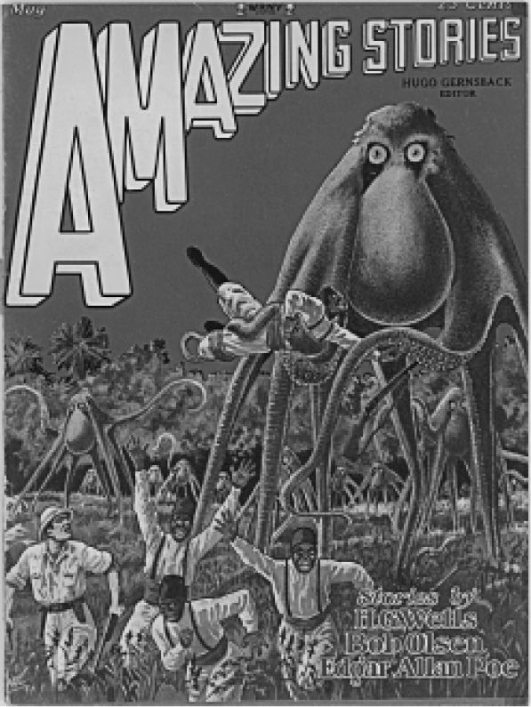

科幻小说不断地拷问同一性的局限和差异的本质，后者常常通过一种类似讽喻的途径而加以描述：将异族移置于其他国家或者其他星球，从而实现不同文明之间的遭遇。直面他者让读者得以重新审视自身的观念，异族文化很少能够独立地被探究，只有通过强调差异才能得到领悟。
在科幻中，异族 [4] 的概念可以在三层相互重叠的意义上来理解。首先，异族可以指与人类完全不同的存在，有时是来自其他行星的；其次，它又可以指社会的疏离现象，如H.G.韦尔斯的《时间机器》（1895）中所描写的地下的劳工和地面上退化的享乐者之间所形成的阶级分化，或者是《大都会》中身为管理者的精英和僵尸一样木然的工人；最后，这个词又可以指叙事本身的一种特质，在20世纪初，读者常常通过一种准编辑的叙事架构而接触到这种叙事风格。在同一本书内发现以上这些特质是有可能的。例如，美国作家皮耶东·W.杜内尔的《共和国最后的日子》（1880）就把使用华人移民劳工扭曲为阴谋诡计。杜内尔颠覆了人们对于天定命运的信念，用中国人来具体呈现支配的冲动，把中国人描述为逐渐接管了美国的人，最终美国的名字都被从地图上抹去了。
异族的所谓“异”，指的就是相异性和差异，科幻中的异族显然总是参照人们所熟悉的人类群体、动物、机器而想象出来的。“异族”这个词最早在埃德加·赖斯·伯勒斯的《火星公主》（1912）中就出现过两次，书中的男主人公约翰·卡特上校是美国内战期间南方军的军人，在亚利桑那州阿帕奇族印第安人的袭击中逃脱，然后被神秘地传送到了火星。在这个红色的星球上，他观察绿色类人种族的风俗。他凝视他们的“异族孵育场”，这是抚育火星婴儿的巢穴。在这里，异族这个形容词就标志着一种不同于地球上人类风俗的做法，即火星上的绿色种族当中并没有父母一说。这个词第二次出现的时候意思就发生了变化。卡特被火星上的绿色种族接受了，虽然一位领袖宣称这位访客让他感到惊讶，说“你是一个异族人”，但同时又是一位首领。事实上火星人能够说出“异族”这个词，甚至把它用在卡特身上，这就颠覆了“异族”一词原来指地球人之外生命的含义。换言之，异族的相异性可以根据语境和角度而表现为一种转换中的关系。在两次世界大战期间，“异族”这个术语同地外生命的联系逐渐加强，但是我们要记得它发源于19世纪的种族理论和政治。对异族的敌意在美国是通过两个法案而被制度化的，这两个法案分别是《排华法案》（1882）和《驱逐无政府主义者法案》（1901）。
在同一时期，火星上的类人生命（这是世纪之交最受欢迎的可能性）往往被描述成具有与该时期美国一致的种族等级制度。在珀西·格雷格的《穿跃黄道带》（1880）中，发现火星上居住着身材矮小的人类，这些人长着雅利安人的外表，就像瑞典人或者德国人一样。古斯塔夫斯·波普在《火星之旅》（1894）中随意地把他的火星人按颜色分成红色、黄色、蓝色三个种族。回过头来看伯勒斯，他的“巴尔苏姆”系列可能是对火星生命的早期描述当中最有名的。在《火星公主》中，约翰·卡特上校第一眼看到的是大脑袋、四肢萎缩、长得奇形怪状的生物正在孵化，当他看着这些动物的时候，一队武士骑着坐骑奔过来，把他掳走了。从这时开始，外星人给读者的那种异己感渐渐变淡，而越来越接近人类，这是因为虽然这些绿人比地球人多了两条肢体，但是依照当时的观念，他们的文化同美洲印第安人有点像。伯勒斯写他第一本火星小说的时候，计划是要“科学地描写火星上的统治种族”，这个种族和地球人将是相似的。他以火星作为奇幻背景，拼凑了跟人类多少有些相似的生物。卡特首先看到的生物构成了火星奇特环境的一部分，用伯勒斯时代的辞藻来说，红色种族和绿色种族之间的冲突类似于地球上“文明”种族和“原始”种族之间的冲突。
伯勒斯在《火星众神》（1918）中又为火星增添了一个种族，即“植物人”，他们只有一只眼，没有毛发，错位的嘴巴长在了手掌之上。他们的腋下还挂着一个微缩版的自身。和第一本小说一样，在这部小说中，火星人中最怪异的形象一开始就出现了。同这个种族相比，后来出现的生物看起来只是有点古怪，一点都不可怕了。小说中的大白猿让人想起人类进化的早期阶段。“红种人”的肤色实际上是红铜色的，让人联想到19世纪印第安人在西方人心目中的传统形象。最后，所谓的“黑色海盗”被设定成“原始”但是“正宗”的火星种族，在所有种族中属于贵族。在外表上，这个种族的人像是高贵野蛮人的集中体现，和卡特一族的区别只在于肤色。在美国南方人眼中这可能有点奇怪，但卡特不得不承认他们的肤色反而增加了他们的美。伯勒斯在小说中提供的文本线索暗示，在火星人身上，我们看到的是地球上不同种族之间的相似性和差异。这些火星人时不时地被俘和脱逃，构成了文本的节奏，这也是伯勒斯小说叙事的招牌。
到现在为止，我们讨论的外星人都是人形生物，但是外星人完全可以和人不一样。在H.G.韦尔斯的《最早登上月球的人》（1901）中，旅行者看到的第一块透明石膏其实是一个蚁人，一种“复杂的昆虫”，长着外壳，头上有“眼罩”和“尖刺”。这些地球人对于他们看到的东西是不是人莫衷一是，因为这种生物是个混合体，外形像一只大蚂蚁，但是又有智力和技术，这是他们在被俘后才了解的。这两个地球人都逃了出来，但是只有一人成功地回到了地球。韦尔斯一方面不去过分地刻画蚁人的外表，一方面又力图揭示他们的社会组织结构，在两者之间精心地保持了平衡。在通俗杂志科幻小说中这种谨慎的做法往往被忽略，虫眼怪物变得很普遍。这个词已经沦为了陈词滥调，通常只是指完全异于人类的可怕生物或带有攻击性的某些物种，这些物种还有可能会对任何不幸遭遇他们的倒霉女性角色兽性大发。多产的科幻插画师弗兰克·R.保罗为这些杂志创作的封面起到了应有的作用。图4展示了一个典型的例子：身形矮小的人类在一头怪物前面四散逃跑，这个怪物长着许多肢体，脑袋和躯体似乎是一体的。

图4 《惊奇故事》（1928年5月）的封面
斯坦利·温鲍姆的《火星奥德赛》（1934）则为外星人形象提供了一种新的可能性，在他的小说中，外星人和地球人的相似与相异之处俱存。在第一次前往火星的征途中，旅行者们遇到了类人猿和一只“怪诞的鸵鸟”。小说通过强调该生物的怪异之处而将之呈现在读者面前，随后这个生物的外表渐渐不再那么古怪，说他属于人类也似乎是合理的了。最后证明其实这生物不算是一只鸟，只是脖子有点长，身体小而圆罢了。更重要的是，他展示出了拥有智力的明显迹象：他能够理解数学图表，并且逐渐学会了英语。人们给他取名为特维尔，把他当作同伴，他和人类一起在火星上四处观看。当特维尔越来越像人的时候，他的外表也越来越少地被提及。